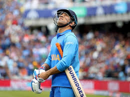

|  |
Mahendra Singh Dhoni, is a former Indian international cricketer
who captained the Indian national team in limited-overs formats
from 2007 to 2016 and in Test cricket from 2008 to 2014
| FORMAT | MATCHES | INNINGS | NOT OUTS | RUNS | HSCORE | AVERAGE | BALLS FACED | BALLS FACED | STRIKE RATE | 100S | 50S |
|---|---|---|---|---|---|---|---|---|---|---|---|
| TEST | 90 | 144 | 16 | 4876 | 224 | 38.1 | 8249 | 265 | 59.1 | 6 | 33 |
| ODI | 350 | 297 | 84 | 10773 | 183* | 50.6 | 12303 | 145 | 87.6 | 10 | 73 |
| T20 | 98 | 85 | 42 | 1617 | 56 | 37.6 | 1282 | 36 | 126.1 | 0 | 2 |
| IPL | 204 | 182 | 69 | 4632 | 84* | 41.0 | 3387 | 48 | 136.8 | 0 | 23 |
| Uninhibited Style | Hailing from a humble background, Dhoni never let this aspect hinder his style or behaviour. Infact, he managed to channelize this raw rustic energy to his on-field performance. He was never shy of expressing himself in any given situation. |
| Managing Ego’s | Dhoni was catapulted to captaincy ahead of several established players in a team laden with stars and former captains. He took his time and didn't interfere in their proven methods and managed to extract the best out of these stars at most times without ruffling feathers. |
| versatile | Dhoni is hands on, is versatile and can adapt to any situation. He plays all three formats of the game, can bat in any position, keep wickets and roll his arm if required. Versatility and adaptability is the key for long-term success in the corporate world. |